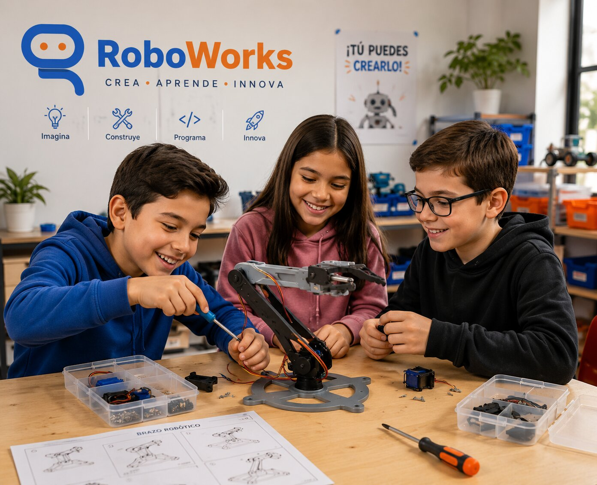

Un reto, no solo una manualidad
Durante tres semanas, cada equipo diseña, arma y cablea su propio brazo robótico: base, hombro, codo, muñeca y garra. No es una maqueta que se queda quieta — al final se mueve de verdad, controlado por ellos mismos con Arduino y potenciómetros.
Pasan por todo el proceso real de la ingeniería: construir la estructura, entender la electrónica, escribir su primer código y calibrar hasta que funcione.
El sábado 29 de agosto cerramos con una feria de robótica para las familias, donde cada equipo demuestra su brazo en vivo.
Habilidades detrás del brazo robótico
Cada sesión suma una pieza técnica y una habilidad que se queda mucho después del vacacional.
Electrónica básica
Cómo funciona un servomotor, un potenciómetro y una placa Arduino.
Mecánica y estructura
Ejes, palancas y ensamblaje: por qué un brazo se sostiene y se mueve.
Primer código real
Programan en Arduino IDE para conectar cada movimiento con su control.
Depurar y calibrar
Cuando algo no se mueve bien, aprenden a diagnosticar y ajustar.
Trabajo en equipo
Cada brazo se construye entre 3 o 4 niños que se reparten tareas.
Presentar con confianza
Muestran y explican su proyecto frente a su familia el día de cierre.
Trabajan con electrónica real, no de juguete
El mismo tipo de componentes que se usan en robótica educativa a nivel profesional.
10 sesiones, del 10 al 29 de agosto
Clases los lunes, miércoles y viernes. Cerramos con una feria especial el sábado 29.
Bienvenida y mundo de la robótica
Formación de equipos y primer boceto del brazo robótico que van a construir.
Base y hombro
Arman la base fija y el primer eslabón del brazo.
Codo
Construyen el segundo eslabón y prueban el equilibrio del brazo.
Muñeca y garra
Terminan la estructura mecánica completa, incluida la pinza.
Conectando los servos
Primer contacto con Arduino IDE: mueven un servo con código.
Los potenciómetros toman el control
¡El brazo se mueve por primera vez controlado por ellos!
Calibración y control fino
Ajustan rangos de movimiento y practican mover objetos pequeños.
Decoración y reto de precisión
Personalizan su brazo y practican un circuito de misión.
Ensayo general
Revisión técnica final y ensayo de la demostración.
¡Feria de Robótica! 🎉
Demostración en vivo para las familias, mini-competencia y entrega de certificados.
Se lo llevan funcionando a casa
El brazo robótico no se queda en RoboWorks: cada equipo se lo lleva armado y programado, con certificado de participación con código QR verificable.
Lo que hace diferente a este vacacional
Aprenden haciendo
Nada de teoría sin construir: desde el primer día arman piezas reales.
Kit de electrónica real
Arduino, servomotores y potenciómetros — no una versión de juguete.
Grupos pequeños
Equipos de 3 a 4 niños con acompañamiento cercano de los instructores.
Cierre para toda la familia
El 29 de agosto los papás ven el resultado en vivo, no solo fotos.
¿Tu hijo tiene entre 7 y 12 años?
Cupos limitados para el grupo de agosto. Escríbenos por WhatsApp y te confirmamos disponibilidad.